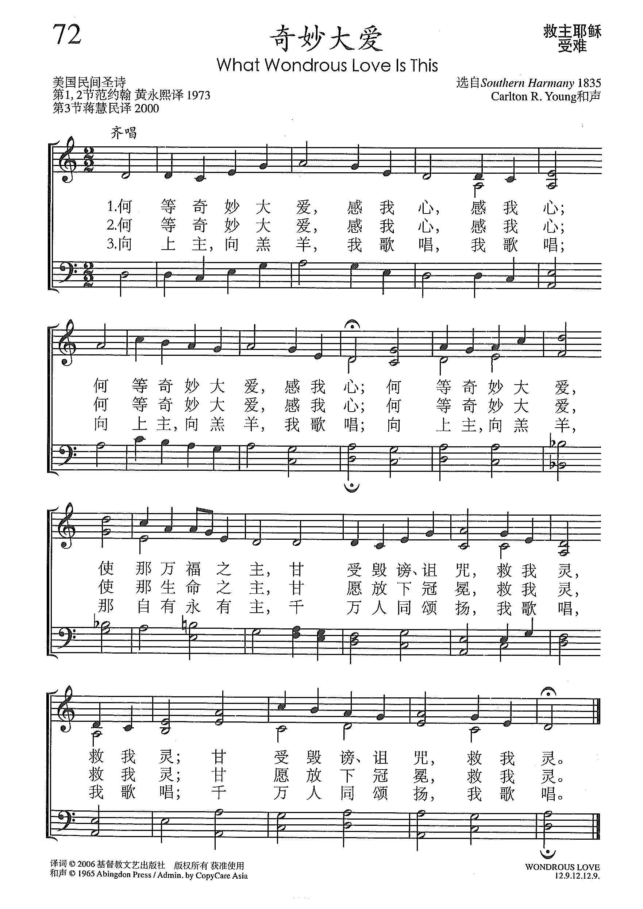
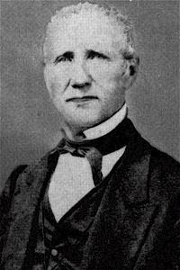
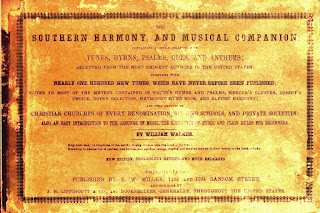

|
|
240 奇妙大愛 |
|
1 What wondrous love is this,
|
|
|
 http://sooopu.com/html/?id=301388
|
|
|
|
|


| 簡介 What Wondrous Love Is This |
| With its ballad-like repetitions before and after each stanza’s central narrative lines, this meditative text needs performance in order to be effective. Its haunting melody proves the means of convincing us that the only adequate response to “wondrous love” is to “sing on.” |
|
|
240 奇妙大愛 |
|
1 What wondrous love is this,
|
|
|
 http://sooopu.com/html/?id=301388
|
|
|
|
|

St. Olaf Choir (Anton Armstrong, Conductor) perform "What Wondrous Love". From the collection "Southern Harmony" https://www.youtube.com/watch?v=DsVnvN3EVxY&t=29s
What Wondrous Love by Mountain Blue https://www.youtube.com/watch?v=gbUepCiRCWw&t=37s


William Walker and his Southern Harmony and Musical Companion, 1835
Like 103 and 305, the text is addressed to the soul. It meditates on Christ's wonderful love (st. 1), which brought about our salvation (st. 2), a love to which we and the "millions" respond with eternal praise (st. 3-4).
This song reflects the narrative of the suffering and death of Christ on Calvary, events whose significance and purpose is deepened by the confessions of the church. Heidelberg Catechism, Lord’s Days 15-16, Questions and Answers 37-44 explain the significance of each step of his suffering. Question and Answer 40 testifies that Christ had to suffer death “because God’s justice and truth require it; nothing else could pay for our sins except the death of the son of God.”
The Belgic Confession,
Article 20 professes that “God made known his justice toward his Son…poured
out his goodness and mercy on us…giving to us his Son to die, by a most
perfect love, and raising him to life for our justification, in order that
by him we might have immortality and eternal life.”
Consider also the testimony of Belgic Confession, Article 21: “He endured
all this for the forgiveness of our sins.”
BY C. MICHAEL HAWN
"What Wondrous Love Is This"
Anonymous American folk hymn
The United Methodist Hymnal, No. 292
What wondrous love is this, O my soul, O my soul,
What wondrous love is this, O my soul!
What wondrous love is this
that caused the Lord of bliss
to bear the dreadful curse for my soul, for my soul,
To bear the dreadful curse for my soul.
We have few clues as to the author and composer of this profound hymn of wonder at the love of Christ for all humanity.
"What Wondrous Love Is This" captures our attention right from the beginning with its simplicity and persistence – "What wondrous love is this" sung three times. This repetition is not the sign of a weak poet who has a narrow range of expression, but a fellow traveler who has experienced profoundly the sacrificial love of Christ and can only express again and again – "What wondrous love is this." It is the kind of repetition that sounds trite when spoken, yet gains strength and power through singing. These are not the carefully crafted words of a theologian, but utterances directly from the heart or, even more profoundly, from the soul.
Depending on how one reads the stanza cited above, the entire first stanza is either a statement of pure awe or a profound question. This rhetorical device – the ambiguity of a statement of awe or profound question – is reminiscent of Charles Wesley's "And Can It Be" (United Methodist Hymnal, 363). The first stanza of that hymn ends, "Amazing love! How can it be/that thou, my God, shouldst die for me?"
The sentiments in "Wondrous Love" are almost identical, causing one to speculate if the poet had encountered Wesley's version some decades earlier. Exploring that possibility, however, is academic. Is this not the profound realization of every Christian who reflects on God's love in Christ?
Thanks to the careful work of scholars, we do have some suggestions about the origins of this hymn. According to correspondence with Carlton Young, the text appeared as early as 1811 in a collection by Stith Mead titled General Selection of the Newest and Most Admired Hymns and Spiritual Songs Now in Use (second enlarged edition). William J. Reynolds traced a variant of this text to Hymns and Spiritual Songs, Original and Selected by Starke Dupuy, also published in 1811.
Famous Appalachian folksong collector George Pullen Jackson noted that the structure of the text was very similar to the English ballad "Captain Kidd." Robert Kidd was a pirate who was executed in 1701. All of this suggests a song with its origins in oral tradition sung in several variants, but eventually stabilized by being printed in a widely circulated collection.
Hymnologist Harry Eskew suggests that the tune first appeared in the second edition (1840) of William Walker's shaped-note collection, The Southern Harmony, and Musical Companion (originally 1835). Walker himself (also known as "Singing Billy" Walker) states unambiguously that the song may be attributed to a James Christopher of Spartanburg, South Carolina. Scholars such as Deborah Carlton Loftis find this very suspicious for many musicological and hymnological reasons. We can say, however, that The Southern Harmony put this song on the lips of many singers in the antebellum south.
The text is sometimes attributed to Alexander Means (1801-1883), a physician, professor, President of Emory College (now University) from 1854-1855, and a licensed preacher in the Methodist Episcopal Church. While an impressive individual for sure, he would have been only ten years old when the text appeared in 1811 in the collection cited above by Stith Mead.
Perhaps a difficult phrase to sing for many today is found in stanza one:
. . .
What wondrous love is this
that caused the Lord of bliss
to bear the dreadful curse for my soul. . .
Perhaps "dreadful curse" is a reference to "original sin" or the sin that all humanity shares as a result of the fall of Adam. A look at this concept through Calvinist eyes adds gravity to the phrase. If the writer was Calvinist in perspective, the "dreadful curse" may reflect the "total depravity of man."
An original second stanza certainly supports this:
When I was sinking down . . .
Beneath God's righteous frown,
Christ laid aside his crown for my soul.
The amended version appears in The United Methodist Hymnal as:
What wondrous love is this . . .
that caused the Lord of Life
to lay aside his crown for my soul.
Certainly the latter is more attuned to grace and mercy.
The six-stanza variant that first appeared in Methodist hymnals is reduced to four in The United Methodist Hymnal. The song of the lone singer takes on cosmic proportions in stanza three as "millions join the theme." In stanza four, we find that this is an unending song of praise as "through eternity, [we'll] sing on."
Dr. Hawn is distinguished professor of church music at Perkins School of Theology. He is also director of the seminary's sacred music program.
https://www.umcdiscipleship.org/resources/history-of-hymns-what-wondrous-love-is-this
Words: Southern Folk Hymn (author unknown)
Music: (composer unknown)
Links:
Wordwise Hymns
The Cyber
Hymnal
Hymnary.org

Note: This hymn is sometimes called a White Spiritual. It has its origins in the American South, in the revivalist camp meetings of the early nineteenth century (depicted in the drawing). Most agree the author is unknown, but The Hesperian Harp, printed in 1848, attributes the song to Alexander Means, a Methodist preacher in Oxford, Georgia.
As to the tune, it was printed in 1835, in The Southern Harmony and Musical Companion, by William Walker (1809-1875). The modern arrangement was written by hymn historian William Reynolds (1920-2009).
The stirring hymn owes much to its hauntingly beautiful melody. Once heard, it’s hard to forget. Some have contended that it is a melody used in an old ballad about the pirate Captain Kidd. Others reject the idea, though as to the text, the structure is similar. William Kidd, a Scottish pirate, was hanged on May 23, 1701. The ballad about him says:
My name was William Kidd, as I sailed, as I sailed,
My name was William Kidd, when I sailed,
My name was William Kidd; God’s laws I did forbid,
So wickedly I did, as I sailed.
The version of the present hymn given in the Cyber Hymnal is derived from the earliest form known, but as of this time, the actual third and fourth stanzas first printed in 1811 are missing. They are:
(3) Ye wingèd seraphs fly, bear the news, bear the news!
Ye wingèd seraphs fly bear the news!–
Ye wingèd seraphs fly, like comets through the sky,
Fill vast eternity with the news, with the news!
Fill vast eternity with the news!
(4) Ye friends of Zion’s King, join His praise, join His praise;
Ye friends of Zion’s King, join His praise;
Ye friends of Zion’s King, with hearts and voices sing,
And strike each tuneful string in His praise, in His praise!
And strike each tuneful string in His praise!
Then follow CH-3 and CH-4. But American Hymns Old and New, published by Columbia University Press in 1980, includes a final stanza I’ve not seen elsewhere. It says:
(7?) Yes, when to that bright world we arise, we arise,
Yes, when to that bright world we arise;
When to that world we go, free from all pain and woe,
We’ll join the happy throng, and sing on, and sing on,
We’ll join the happy throng, and sing on.
Taken together, those stanzas provide a simple (and biblical) expression of the Christian gospel. It was love that caused the Lord to come to this earth and bear sin’s punishment for us (Jn. 3:16; Gal. 2:20). For this we can and should praise Him now (cf. Exod. 15:2; Ps. 62:7; Hab. 3:18). And our song of praise will echo and re-echo down the endless ages of eternity (Rev. 5:8-14; 19:5).
CH-1) What wondrous love is this, O my soul, O my soul!
What wondrous love is this, O my soul!
What wondrous love is this that caused the Lord of bliss
To bear the dreadful curse for my soul, for my soul,
To bear the dreadful curse for my soul.
CH-3) To God and to the Lamb, I will sing, I will sing;
To God and to the Lamb, I will sing.
To God and to the Lamb who is the great “I Am”;
While millions join the theme, I will sing, I will sing;
While millions join the theme, I will sing.
CH-4) And when from death I’m free, I’ll sing on, I’ll sing on;
And when from death I’m free, I’ll sing on.
And when from death I’m free, I’ll sing and joyful be;
And through eternity, I’ll sing on, I’ll sing on;
And through eternity, I’ll sing on.
Questions:
1) What are some of the wonderful blessings that are a part of God’s
salvation?
2) What, in your view, are the greatest hymns on the theme of salvation?
https://wordwisehymns.com/2014/12/10/what-wondrous-love-is-this/
"What Wondrous Love Is This" (often just referred to as "Wondrous Love") is a Christian folk hymn from the American South.[1] Its text was first published in 1811, during the Second Great Awakening, and its melody derived from a popular English ballad (Roud number 5089).[2] Today it is a widely known hymn included in hymnals of many Christian denominations.[3]
The hymn's lyrics were first published in Lynchburg, Virginia in the c. 1811 camp meeting songbook A General Selection of the Newest and Most Admired Hymns and Spiritual Songs Now in Use.[4] The lyrics may also have been printed, in a slightly different form, in the 1811 book Hymns and Spiritual Songs, Original and Selected published in Lexington, Kentucky.[5] (It was included in the third edition of this text published in 1818, but all copies of the first edition have been lost.[5]) In most early printings, the hymn's text was attributed to an anonymous author, though the 1848 hymnal The Hesperian Harp attributes the text to a Methodist pastor from Oxford, Georgia named Alexander Means.[6]
Most sources attribute the hymn's melody to the 1701 English song "The Ballad of Captain Kidd", which describes the exploits of pirate William Kidd (misnamed "Robert" in American versions of the ballad).[7][note 1] The melody itself predates the Kidd usage, however, possibly by more than a century.[9] (In addition, at least a dozen popular songs were set to the same melody after 1701.[10]) In the early 1800s, when the lyrics to "What Wondrous Love Is This" were first published, hymnals typically lacked any musical notation.[11] Camp meeting attendees during the Second Great Awakening would sing the hymns printed in these hymnals to a variety of popular melodies, including "The Ballad of Captain Kidd", which was well known at the time; this is likely how the text and melody came to be paired.[12] The text and melody were first published together in the appendix of the 1840[13] edition of The Southern Harmony, a book of shape note hymns compiled by William Walker. The three-part harmony printed in The Southern Harmony was arranged by James Christopher of Spartanburg, South Carolina.[5] In a later printing of the hymn, William Walker noted that it was a "very popular old Southern tune".[14]
In 1952, American composer and musicologist Charles F. Bryan included "What Wondrous Love Is This" in his folk opera Singin' Billy.[15]
In 1958, American composer Samuel Barber composed Wondrous Love: Variations on a Shape Note Hymn (Op. 34), a work for organ, for Christ Episcopal Church in Grosse Pointe, Michigan; the church's organist, an associate of Barber's, had requested a piece for the dedication ceremony of the church's new organ.[16] The piece begins with a statement that closely follows the traditional hymn; four variations follow, of which the last is the "longest and most expressive".[16]
Norman Blake accelerated the first six notes of “What Wondrous Love Is This” (the notes of that title’s five words) and three repetitions of them as the intro[17] of his 1972 or 1973 bluegrass reel “Coming Down from Rising Fawn.”
Dwayne S. Milburn composed a prelude on Wondrous Love as the first movement of his "American Hymnsong Suite" (2003) for concert band.
In 1966, the United Methodist Book of Hymns became the first standard hymnal to incorporate What Wondrous Love Is This.[6] What Wondrous Love Is This is now a widely known hymn and is included in many major hymnals, including the Baptist Hymnal, Book of Praise (Presbyterian), Chalice Hymnal (Christian Church (Disciples of Christ)), Common Praise (Anglican), The Hymnal 1982 (Episcopalian), Lutheran Book of Worship, New Century Hymnal (United Church of Christ), Presbyterian Hymnal, Voices United (United Church of Canada), The Worshipping Church (interdenominational), Worship (Roman Catholic), and Singing the Living Tradition (Unitarian Universalism), and A New Hymnal for Colleges and Schools (interdenominational).[3] The Unitarian Universalist hymnal replaces the original lyrics with words by Connie Campbell Hart to better reflect the denomination's theology. In addition, the Secular Hymnal replaces the original lyrics with new secular words by Secretary Michael.[18] In 2003, the group Blue Highway, sing this and recorded this in a new version, included in the album "Wondrous Love". The traditional version is also available in Messianic Christian singer Helen Shapiro's CD 'What Wondrous Love'.
The hymn is sung in Dorian mode, giving it a haunting quality.[19] Though The Southern Harmony and many later hymnals incorrectly notated the song in Aeolian mode (natural minor),[20] even congregations singing from these hymnals generally sang in Dorian mode by spontaneously raising the sixth note a half step wherever it appeared.[21] Twentieth-century hymnals generally present the hymn in Dorian mode, or sometimes in Aeolian mode but with a raised sixth.[20] The hymn has an unusual meter of 6-6-6-3-6-6-6-6-6-3.[22]
The song's lyrics express awe at the love of God and are reminiscent of the text of John 3:16.[23] The following lyrics are those printed in the 1811 hymnal A General Selection of the Newest and Most Admired Hymns and Spiritual Songs Now in Use;[24] a number of variations exist, but most are descended from this version.[25]
|
1. |
3. |
5. |
https://en.wikipedia.org/wiki/What_Wondrous_Love_Is_This


{kind=link}
{kind=link}
{kind=link}